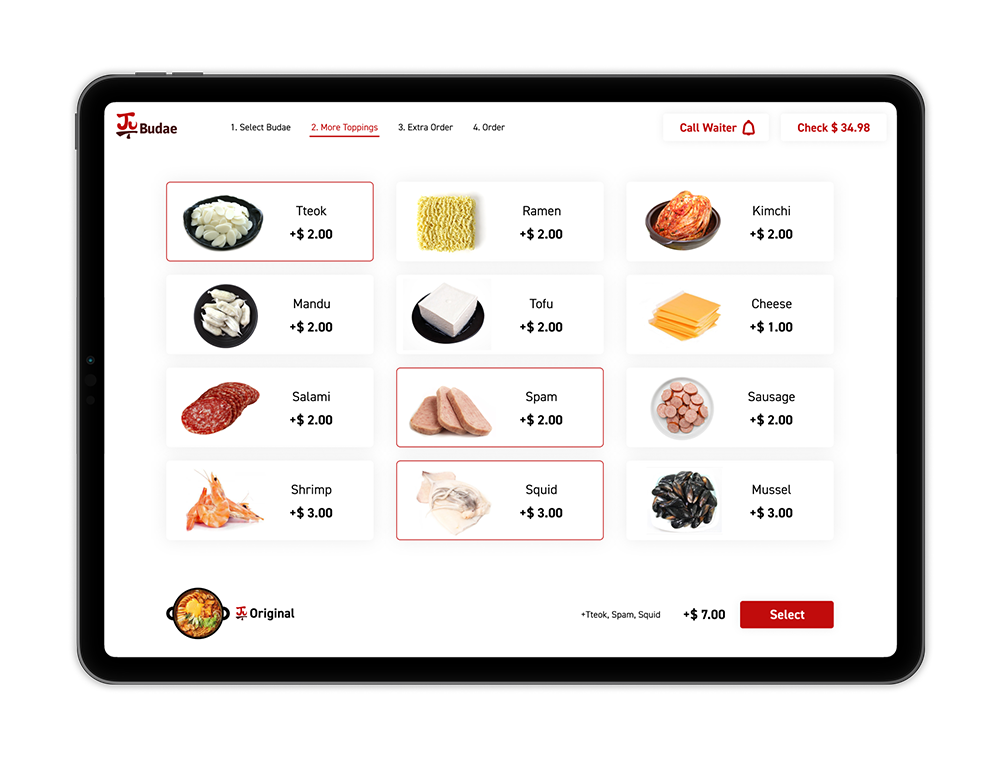
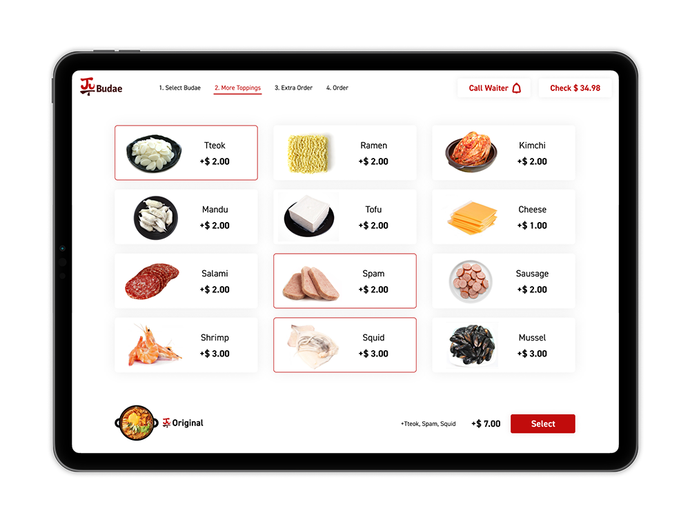

User Flow

Digital menu for Budae-jjigae restaurant "Ju Budae". Customers can look at pictures of food without the help of a waiter and order additional food repeatedly.
 

Budae-jjigae is a traditional Korean food. Customers can also make their Budae-jjigae by adding a variety of ingredients. And they can add more ingredients while eating. However, customers should call a waiter whenever they add ingredients. They have to wait for the waiter to pick up the order, send the order to the kitchen, and get it back. This process takes a very long time to get ingredients, not extra food. So a digital menu can reduce this process. It will be a small tablet monitor on every table, and customers can easily see unfamiliar foreign foods through explanations and photos. And the process of ordering is reduced because the order will go directly into the kitchen and serve it by the waiter.

The process of an order divides into two main parts. The First Order and During a Meal. The First Order divides into four processes. Choose the type of Budae-jjigae, choose the ingredients to add, and order rice or beverages, and check the list on the final order page. The First Order process will proceed in order unless users cancel it. After order, During a Meal will be showing the additional ingredients, more rice, or beverages, call the waiter to pay or take out it. This process is done by moving from During a Meal page to another page and come back. Once users completed their first order, they will not be able to return to the first order to prevent information from being lost by mistake. Its design to be controlled only from the main tablet that manages all menus.